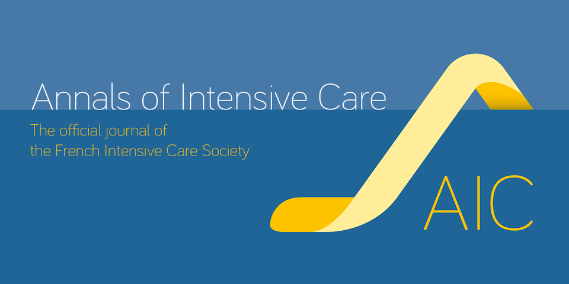
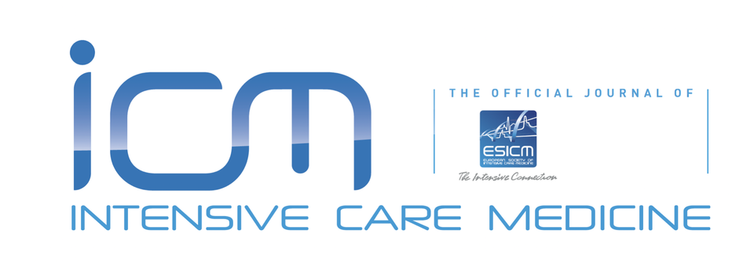

Publications
Early and late effects of volatile sedation with sevoflurane on respiratory mechanics of critically ill COPD patients

Abstract
Background The objective was to compare sevoflurane, a volatile sedation agent with potential bronchodilatory properties, with propofol on respiratory mechanics in critically ill patients with COPD exacerbation.
Methods Prospective study in an ICU enrolling critically ill intubated patients with severe COPD exacerbation and comparing propofol and sevoflurane after 1:1 randomisation. Respiratory system mechanics (airway resistance, PEEPi, trapped volume, ventilatory ratio and respiratory system compliance), gas exchange, vitals, safety and outcome were measured at inclusion and then until H48. Total airway resistance change from baseline to H48 in both sevoflurane and propofol groups was the main endpoint.
Results Sixteen patients were enrolled and were sedated for 126 h(61–228) in the propofol group and 207 h(171–216) in the sevoflurane group. At baseline, airway resistance was 21.6cmH2O/l/s(19.8–21.6) in the propofol group and 20.4cmH2O/l/s(18.6–26.4) in the sevoflurane group, (p = 0.73); trapped volume was 260 ml(176–290) in the propofol group and 73 ml(35–126) in the sevoflurane group, p = 0.02. Intrinsic PEEP was 1.5cmH2O(1–3) in both groups after external PEEP optimization. There was neither early (H4) or late (H48) significant difference in airway resistance and respiratory mechanics parameters between the two groups.
Conclusions In critically ill patients intubated with COPD exacerbation, there was no significant difference in respiratory mechanics between sevoflurane and propofol from inclusion to H4 and H48. —-
Adjustments of Ventilator Parameters during Operating Room–to–ICU Transition and 28-Day Mortality
Abstract
Rationale Lung-protective mechanical ventilation strategies have been proven beneficial in the operating room (OR) and the ICU. However, differential practices in ventilator management persist, often resulting in adjustments of ventilator parameters when transitioning patients from the OR to the ICU.
Objectives To characterize patterns of ventilator adjustments during the transition of mechanically ventilated surgical patients from the OR to the ICU and assess their impact on 28-day mortality.
Methods Hospital registry study including patients undergoing general anesthesia with continued, controlled mechanical ventilation in the ICU between 2008 and 2022. Ventilator parameters were assessed 1 hour before and 6 hours after the transition.
Measurements and Main Results Of 2,103 patients, 212 (10.1%) died within 28 days. Upon OR-to-ICU transition, VT and driving pressure decreased (−1.1 ml/kg predicted body weight [IQR, −2.0 to −0.2]; P < 0.001; and −4.3 cm H2O [−8.2 to −1.2]; P < 0.001). Concomitantly, respiratory rates increased (+5.0 breaths/min [2.0 to 7.5]; P < 0.001), resulting overall in slightly higher mechanical power (MP) in the ICU (+0.7 J/min [−1.9 to 3.0]; P < 0.001). In adjusted analysis, increases in MP were associated with a higher 28-day mortality rate (adjusted odds ratio, 1.10; 95% confidence interval, 1.06–1.14; P < 0.001; adjusted risk difference, 0.7%; 95% confidence interval, 0.4–1.0, both per 1 J/min).
Conclusion During transition of mechanically ventilated patients from the OR to the ICU, ventilator adjustments resulting in higher MP were associated with a greater risk of 28-day mortality. —-
Inflammatory subphenotypes in patients at risk of ARDS: evidence from the LIPS-A trial

Abstract
Purpose Latent class analysis (LCA) has identified hyper- and non-hyper-inflammatory subphenotypes in patients with acute respiratory distress syndrome (ARDS). It is unknown how early inflammatory subphenotypes can be identified in patients at risk of ARDS. We aimed to test for inflammatory subphenotypes upon presentation to the emergency department.
Methods LIPS-A was a trial of aspirin to prevent ARDS in at-risk patients presenting to the emergency department. In this secondary analysis, we performed LCA using clinical, blood test, and biomarker variables.
Results Among 376 (96.4%) patients from the LIPS-A trial, two classes were identified upon presentation to the emergency department (day 0): 72 (19.1%) patients demonstrated characteristics of a hyper-inflammatory and 304 (80.9%) of a non-hyper-inflammatory subphenotype. 15.3% of patients in the hyper- and 8.2% in the non-hyper-inflammatory class developed ARDS (p = 0.07). Patients in the hyper-inflammatory class had fewer ventilator-free days (median [interquartile range, IQR] 28[23–28] versus 28[27–28]; p = 0.010), longer intensive care unit (3[2–6] versus 0[0–3] days; p < 0.001) and hospital (9[6–18] versus 5[3–9] days; p < 0.001) length of stay, and higher 1-year mortality (34.7% versus 20%; p = 0.008). Subphenotypes were identified on day 1 and 4 in a subgroup with available data (n = 244). 77.9% of patients remained in their baseline class throughout day 4. Patients with a hyper-inflammatory subphenotype throughout the study period (n = 22) were at higher risk of ARDS (36.4% versus 10.4%; p = 0.003).
Conclusion Hyper- and non-hyper-inflammatory subphenotypes may precede ARDS development, remain identifiable over time, and can be identified upon presentation to the emergency department. A hyper-inflammatory subphenotype predicts worse outcomes.
Long-term outcome of severe metabolic acidemia in ICU patients, a BICAR-ICU trial post hoc analysis
ABSTRACT
Objectives Long-term prognosis of ICU survivors is a major issue. Severe acidemia upon ICU admission is associated with very high short-term mortality. Since the long-term prognosis of these patients is unknown, we aimed to determine the long-term health-related quality of life and survival of these patients.
Design Post hoc analysis of a multicenter, randomized, controlled trial.
Setting Twenty-six French ICUs.
Patients Day 28 critically ill survivors admitted with severe acidemia and enrolled in the BICAR-ICU trial.
Intervention Sodium bicarbonate versus no sodium bicarbonate infusion according to the randomization group.
Measurements and main results The primary outcome was health-related quality of life (HRQoL) measured with the 36-item Short Form Health Survey and the EuroQol 5-D questionnaires. Secondary outcomes were mortality, end-stage renal disease treated with renal replacement therapy or renal transplantation, place of residence, professional status, and ICU readmission. HRQoL was reduced with no significant difference between the two groups. HRQoL was reduced particularly in the role-physical health domain (64/100 ± 41 in the control group and 49/100 ± 43 in the bicarbonate group, p = 0.28), but it was conserved in the emotional domains (96/100 ± 19 in the control group and 86/100 ± 34 in the bicarbonate group, p = 0.44). Forty percent of the survivors described moderate to severe problems walking, and half of the survivors described moderate to severe problems dealing with usual activities. Moderate to severe anxiety or depression symptoms were present in one third of the survivors. Compared with the French general population, HRQoL was decreased in the survivors mostly in the physical domains. The 5-year overall survival rate was 30% with no significant difference between groups.
Conclusions Long-term HRQoL was decreased in both the control and the sodium bicarbonate groups of the BICAR-ICU trial and was lower than the general population, especially in the physical domains.